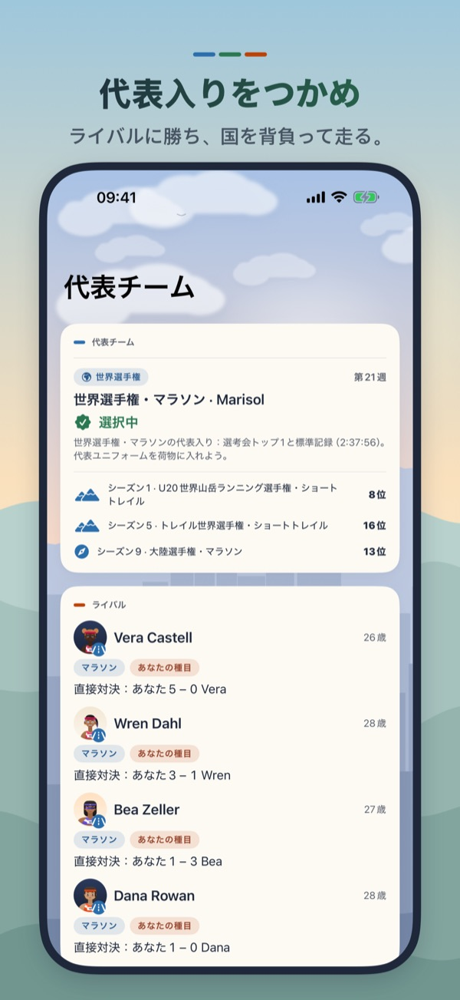

たすきを受け取る。
チームのために走る。
Hidden Paceの駅伝キャリアは、駅伝を題材にした選手育成ゲームです。大学駅伝で18歳から始めるか、22歳で実業団駅伝へ。自分ひとりの順位ではなく、仲間がつないだタイムとたすきを背負って走ります。

順位もタイム差も、そのまま受け継ぐ駅伝
各チームの走者が同時に並ぶ普通のレースではありません。中継所でたすきを受け取る瞬間、チームがいる順位と先頭との差が、そのままあなたのスタートになります。抜いた相手の数だけチーム順位が上がり、離された秒数だけ次の走者が苦しくなる。本物の駅伝らしい、区間と総合の二つの勝負です。
山上り、エース、アンカーへ
最初から花形区間を任されるわけではありません。つなぎの区間で結果を残し、監督の信頼を積み上げると、スタート区間、山下り、エース区間、標高差860mの山上り、そしてアンカーへ。区間ごとに距離も高低差も違い、同じ走力でも役割が変わります。
シード権と予選会
正月の山岳駅伝で10位以内に入れば、翌年のシード権を獲得。逃したチームは秋の予選会へ進みます。12人がハーフマラソンを走り、上位10人の合計タイムで本大会への10枠を争います。個人の好走だけでは足りません。選手層を育て、全員で出場権を取り戻す必要があります。
白たすき、卒業、そして実業団
先頭から大きく遅れれば、次の走者は白たすきで繰り上げスタート。大学では毎年4年生が卒業し、新入生が加わります。4年間を走り終えたあとは実業団駅伝へ進むことも、個人競技のキャリアへ戻ることもできます。駅伝の章が終わっても、選手の人生は続きます。
チームで勝つ喜び
レース後は、たすきが届くまでの展開、自分の区間順位、前後したチーム順位、残り区間、最終成績まで確認できます。表彰台に上がれば、走った全員がカップを囲むチーム写真を作成してシェアできます。
- 大学駅伝と実業団駅伝、2つのキャリア開始
- 駅伝限定のGame Center実績15個
- 限定アプリアイコン「駅伝」
- 「駅伝」「正月の朝日」「One Team」の限定パッチ3種
- 買い切り。広告・サブスクリプション・期間限定販売なし
Hidden Paceとは
Hidden Paceは、iPhone・iPad向けのランナー育成ゲームです。毎週の練習を組み、レース中に仕掛ける・粘る・抑えるを判断し、選手に眠る中距離、マラソン、山岳の才能を見つけます。基本のキャリアは無料で、広告もスタミナ制もありません。